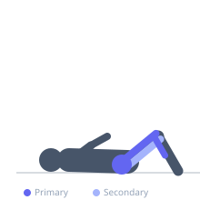
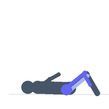

Exercise guide / Single Leg Hop
Single Leg Hop
The single-leg hop is a unilateral plyometric exercise in which the athlete hops continuously on one leg for distance or height, requiring single-leg power production, landing mechanics, and ankle-knee-hip coordination. It develops unilateral lower limb power and is frequently used in return-to-sport testing and rehabilitation as a functional assessment of limb symmetry after lower extremity injury.
Primary muscles
rectus femoris
gluteus maximus
gastrocnemius medial
Secondary muscles
biceps femoris long head
soleus
Stabilizers
gluteus medius
tibialis anterior
Equipment
No Equipment (Bodyweight)


Starting position
- Stand on one leg with the other leg raised. Slight hip hinge, upper body ready to swing.
Setup
- Mark a takeoff line. Use a flat, non-slip surface with adequate forward space.
Steps
- Step 1: Balance on the working leg with the other leg elevated.
- Step 2: Drive off the working leg to hop forward, using the arm on the opposite side to assist.
- Step 3: Land on the same foot, absorbing through the ankle, knee, and hip.
- Step 4: Immediately rebind forward for continuous hopping or pause for measured distance hopping.
- Step 5: Perform equal hops on each leg.
Coaching cues
- Drive off a stiff ankle — push the floor away
- Land with the hip sitting back — not knee over toe collapse
- Equal effort and landing on both legs
Breathing
- Breathe continuously with each hop. Do not hold breath.
Range of motion
- Maximize hop distance or height. Full foot landing on a balanced single-leg stance.
Tempo
- For power: maximal distance per hop, 3–5 hops per set. For conditioning: continuous hops for 20–30 meters.
Common mistakes
- Letting the knee collapse inward on landing
- Using excessive forward lean that causes landing on a stiff ankle
- Skipping the controlled landing to rush to the next hop
Safety
- Not appropriate in early return-to-sport phases after lower extremity surgery without clearance.
- Ensure single-leg landing stability before progressing to continuous hopping.
Training
- power: 3–6 reps
- power: 3–4 sets
- Rest: {'power': 120}